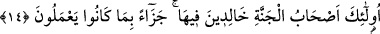

14. Onlar cennet ehlidirler. Yapmakta olduklarına karşılık orada ebedî
kalacaklardır.
“Onlar”, bu îmân ve istikamet sahipleri, “cennet halkıdır, yaptıklarına” ilmî ve
amelî iyiliklere “karşılık orada ebedî kalacaklardır.”
Bu îmân ve istikametten ibaret olan iki büyük sıfatın sahipleri sürekli cennette
olacaklardır. Zira Allah Teâlâ’nın “Onlar cennet halkıdır” buyurması, “onları cennetle
ödüllendirdik”, mânâsındadır.
et-Te’vilâtu’n-Necmiyye’ de şöyle denilir: Burada Allah Teâlâ şuna işâret etmektedir.
Bu insanlar kalpleri îmânda istikamet gösterdikten sonra “Rabbimiz Allah’tır” dediler.
Sonra şeriatın erkânı üzere âzâlarıyla (amel ederek) istikamet gösterdiler. Nefislerini
tezkiye ve terbiye ederek tarikat âdâb ve ahlâkıyla istikamet gösterdiler. Tasfiye üzere
kalplerinin evsafıyla istikamet gösterdiler. Hak Teâlâ hazretlerinin ahlâkını takınarak
tahliye yâni gönüllerini süslemek üzere ruhların teveccühü ile istikamet gösterdiler ve
“Rabbimiz Allah’tır” dediler.
Bunu önce îmânda istikamet göstererek söylediler. Sonra nefislerle erkânı edâ etmek
üzere, kalplerle kesin inanç üzere, sırlarla irfan üzere, ruhlarla ihsan üzere, hafilerle
ayân üzere, Hak Teâlâ ile kendi enaniyet ve benliklerini yok etmek üzere ve Allah’ın zat
ve hüviyetiyle bakâ üzere istikamet gösterdiler. Bunların artık nimet ve feyizlerinin
kesilme korkusu yoktur. Yine bunlar dünya ve âhirete âid bir haz ve lezzetin elden
çıkmasına da üzülmezler. İşte bunlar vahdet cennetinin sahipleridirler. İkilikten emin
olarak orada ebedî kalacaklardır. Bütün bunlar onların sözle birlikte amelde de
istikamet göstermelerine bir ödül olarak kendilerine verilmiştir.
Şeyh Sa’di şöyle demiştir:
İlim seni her ne kadar âlim yapsa da,
Amel olmadıkça bu boş bir iddiâ ve yalandan ibarettir.
Bazıları şöyle demiştir:
Kerâmeti ancak istikàmetle bulursun
İstikàmet olmadıkça kerâmet bulamazsın.
Bazı büyükler şöyle demiştir: Kul kemâlât ve olgunluklara yaklaştıkça ona teklif daha
bir ağırlaşır. Mârifet bereketleri ona döner. Artık melekler, felekler, yerler, gökler,
denizlerde balıklar, çöl, sahra ve ormandaki vahşî hayvanlar, ağaçlardaki yapraklar
hepsi bu insana istiğfar eder, onun için Allah’tan mağfiret taleb ederler. Bundan dolayı,